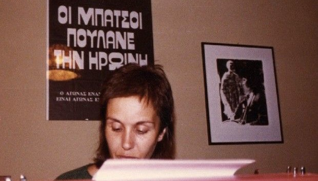

Katerina Gogou - I can't get up
 I can't. I can't get up. I'm not sleeping.Dawn. Privatively.
Heavy. Very. Withdrawal is in the genes. The psychological one.
Sheets of sleep slowly rustle
they slowly wrap me
they take me little by little
translucent shapes
Normison
liquid forms
liquid shapes pass by
they caress each other softly
until the the sharp jaws
of evil dead settle down.
No. I´m cold. I´m hot.
They put hot ice on my temples to relieve me…
Look! Mom, look! They´re laughing!
What shiny teeth they have! Oh… they wear golden dentures!
How come they weren´t stolen? We´re under occupation. 1940…
In a while, mom, I will be born. And dad
in the yard, down at Votanikos, with the hose
with a lot of pressure, with the water, he will drown me…
Next to me, with her back turned
as to not see her, Virgin Mary pretends to sleep…
I crawl in the water I´m afraid of…
I´m drowning.
Only for her
I mirror myself in the mirror.
I´m hedonized by my mouth
which is stuck to my ear.
Nothing else. I can´t see anything else.
My eyesight: mouth and ear.
Blow mom
mom, blow… huff… huff…
blow the red light out
on top of the door
in the chamber
in the dressing room
that light, I´m telling you
on my Moon.
It brings tides of anger
tides of panic
turn it off now
now, mom
The nurses are asleep. Translation from Greek: Zoi Gialitaki